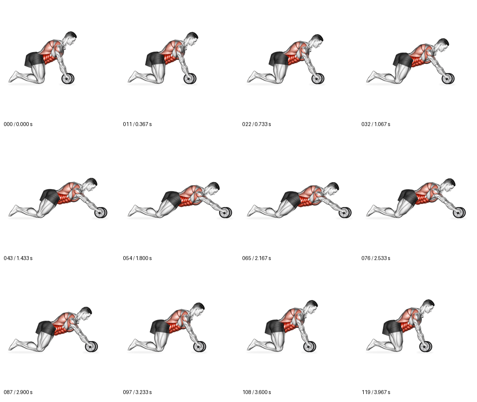

Ролик для пресса: проверка движения и стиля
NEEDS_WORK — требуется проверка. Анатомия, техника и визуальное соответствие не одобрены. Технические показатели не заменяют решение владельца.
Утверждённый референс стиля Исходная анимация — ориентир движения
Кандидат — 120 кадров, 4 секунды
Исходная анимация — ориентир движения
Кандидат — 120 кадров, 4 секунды
Видео синхронизированы по доле цикла. Шаг равен одному кадру кандидата. В исходной анимации длительность и частота кадров могут отличаться. Для проверки стыка кнопка попеременно показывает последний и первый кадры.
12 фаз кандидата
Технический отчёт и SHA-256 · Скачать кандидат MP4